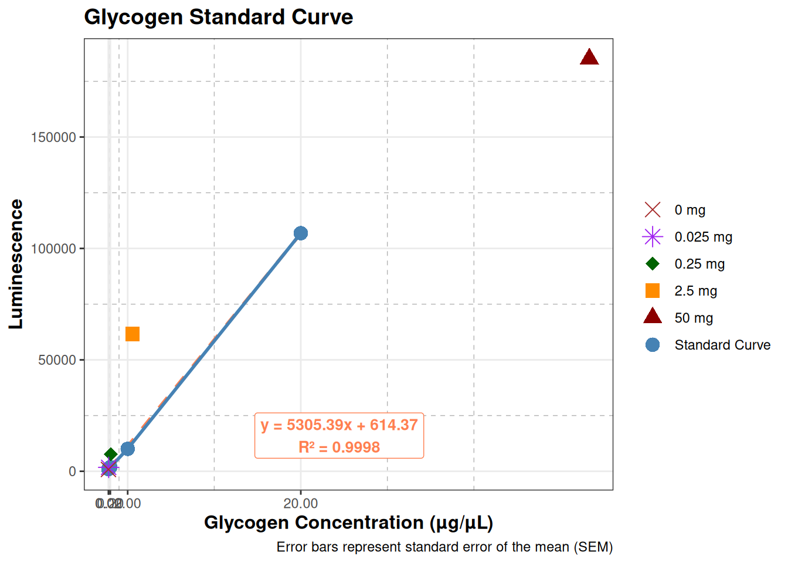

Code
library(ggplot2)
# Glycogen standard curve data from rows E, F, G, columns 1-5
# Concentrations in ug/uL
concentrations <- c(20, 2, 0.2, 0.02, 0)
# Luminescence values for each replicate
row_E <- c(107660, 9963, 1968, 1277, 1164)
row_F <- c(110174, 10220, 1875, 1256, 737)
row_G <- c(102674, 10001, 1815, 1126, 963)
# Calculate mean and standard error for each concentration
means <- numeric(5)
std_errors <- numeric(5)
std_devs <- numeric(5)
for (i in 1:5) {
values <- c(row_E[i], row_F[i], row_G[i])
means[i] <- mean(values)
std_devs[i] <- sd(values)
std_errors[i] <- sd(values) / sqrt(length(values))
}
# Create data frame for plotting
summary_data <- data.frame(
concentration = concentrations,
mean_luminescence = means,
se = std_errors,
sd = std_devs,
cv = (std_devs / means) * 100
)
# Calculate linear regression and R-squared
lm_model <- lm(mean_luminescence ~ concentration, data = summary_data)
r_squared <- summary(lm_model)$r.squared
slope <- coef(lm_model)[2]
intercept <- coef(lm_model)[1]
# Sample data from row A (columns 1, 3, 4, 5, 6)
sample_data <- data.frame(
tissue_mg = c(50, 2.5, 0.25, 0.025, 0),
luminescence = c(185099, 61687, 7654, 1762, 813),
label = c("50 mg", "2.5 mg", "0.25 mg", "0.025 mg", "0 mg")
)
# Create the plot
plot <- ggplot(summary_data, aes(x = concentration, y = mean_luminescence)) +
geom_smooth(method = "lm", se = FALSE, linetype = "dashed",
color = "coral", linewidth = 1) +
geom_errorbar(aes(ymin = mean_luminescence - se, ymax = mean_luminescence + se),
width = 0.1, linewidth = 1, color = "darkblue") +
geom_line(color = "steelblue", linewidth = 1) +
geom_point(aes(color = "Standard Curve", shape = "Standard Curve"), size = 4) +
geom_point(data = sample_data, aes(x = tissue_mg, y = luminescence,
color = label, shape = label), size = 4) +
scale_color_manual(name = "",
values = c("Standard Curve" = "steelblue",
"50 mg" = "darkred",
"2.5 mg" = "darkorange",
"0.25 mg" = "darkgreen",
"0.025 mg" = "purple",
"0 mg" = "brown")) +
scale_shape_manual(name = "",
values = c("Standard Curve" = 16,
"50 mg" = 17,
"2.5 mg" = 15,
"0.25 mg" = 18,
"0.025 mg" = 8,
"0 mg" = 4)) +
annotate("label", x = max(summary_data$concentration) * 1.2,
y = max(summary_data$mean_luminescence) * 0.15,
label = sprintf("y = %.2fx + %.2f\nR² = %.4f", slope, intercept, r_squared),
size = 3.5, fontface = "bold", fill = "white",
color = "coral", label.padding = unit(0.3, "lines")) +
labs(
title = "Glycogen Standard Curve",
x = "Glycogen Concentration (µg/µL)",
y = "Luminescence",
caption = "Error bars represent standard error of the mean (SEM)"
) +
scale_x_continuous(breaks = concentrations) +
theme_bw() +
theme(
plot.title = element_text(size = 14, face = "bold"),
axis.title = element_text(size = 12, face = "bold"),
panel.grid.minor = element_line(linetype = "dashed", color = "grey70")
)
# Save the plot
ggsave("glycogen_standard_curve.png", plot, width = 10, height = 6, dpi = 300)`geom_smooth()` using formula = 'y ~ x'Code
# Display the plot
plot`geom_smooth()` using formula = 'y ~ x'
Code
# Print summary statistics
cat("Glycogen Standard Curve Summary:\n")
cat(rep("=", 50), "\n", sep = "")
for (i in 1:nrow(summary_data)) {
cat(sprintf("Concentration: %g µg/µL\n", summary_data$concentration[i]))
cat(sprintf(" Mean Luminescence: %.2f\n", summary_data$mean_luminescence[i]))
cat(sprintf(" Standard Error: %.2f\n", summary_data$se[i]))
cat(sprintf(" CV%%: %.2f%%\n\n", summary_data$cv[i]))
}Glycogen Standard Curve Summary:
==================================================
Concentration: 20 µg/µL
Mean Luminescence: 106836.00
Standard Error: 2203.92
CV%: 3.57%
Concentration: 2 µg/µL
Mean Luminescence: 10061.33
Standard Error: 80.09
CV%: 1.38%
Concentration: 0.2 µg/µL
Mean Luminescence: 1886.00
Standard Error: 44.51
CV%: 4.09%
Concentration: 0.02 µg/µL
Mean Luminescence: 1219.67
Standard Error: 47.22
CV%: 6.71%
Concentration: 0 µg/µL
Mean Luminescence: 954.67
Standard Error: 123.33
CV%: 22.38%